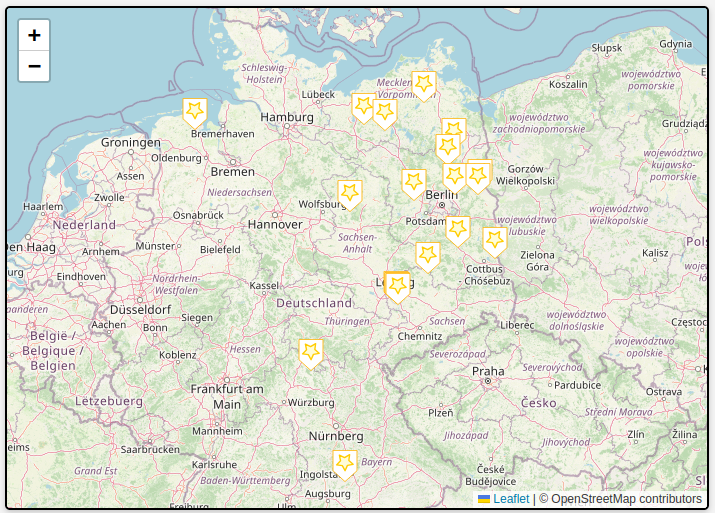
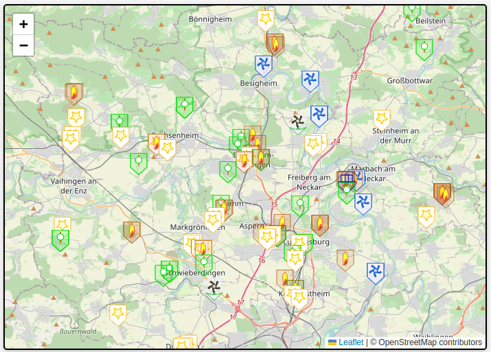
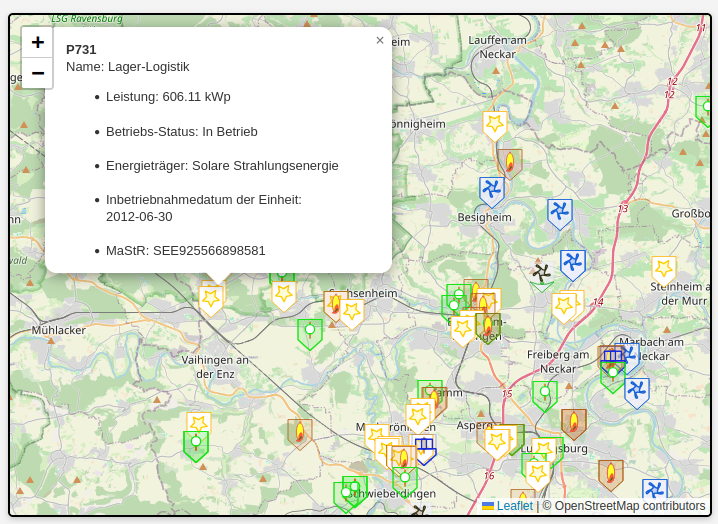
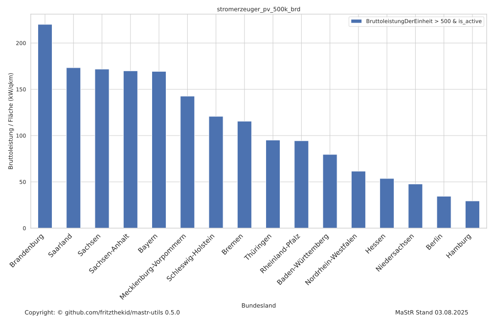
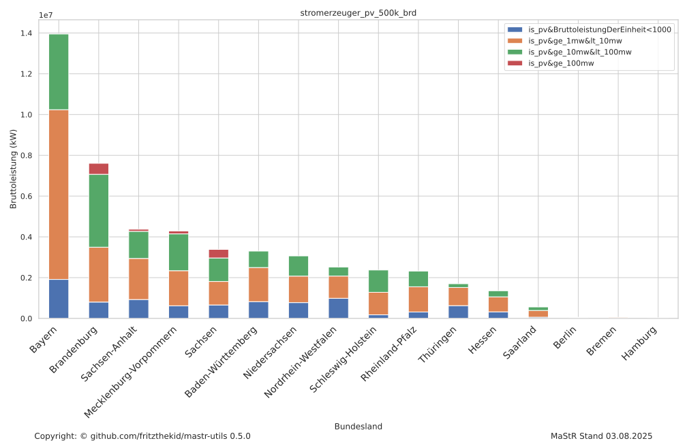
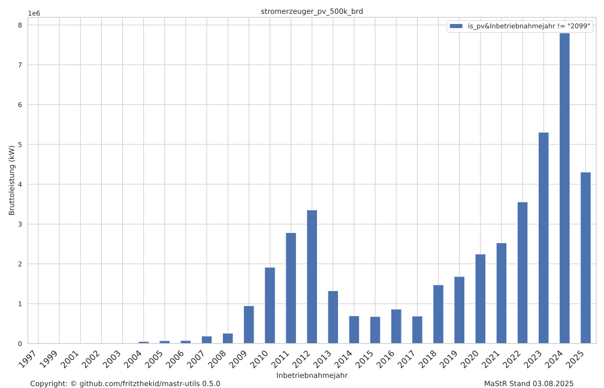
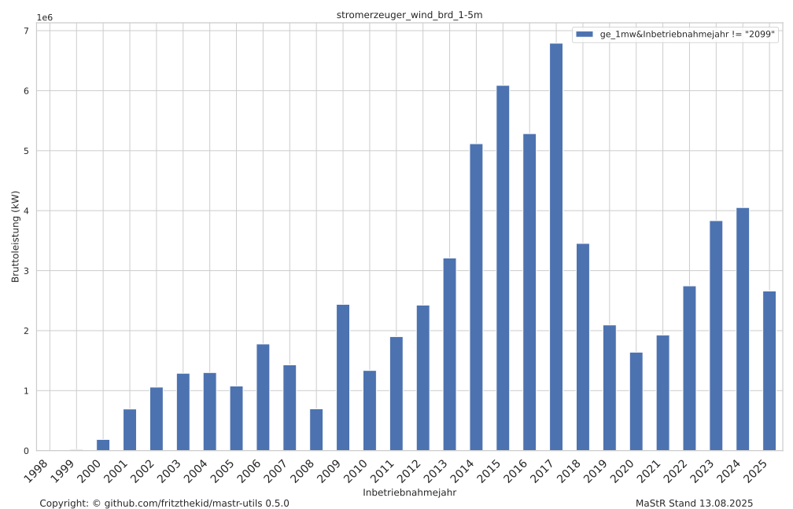
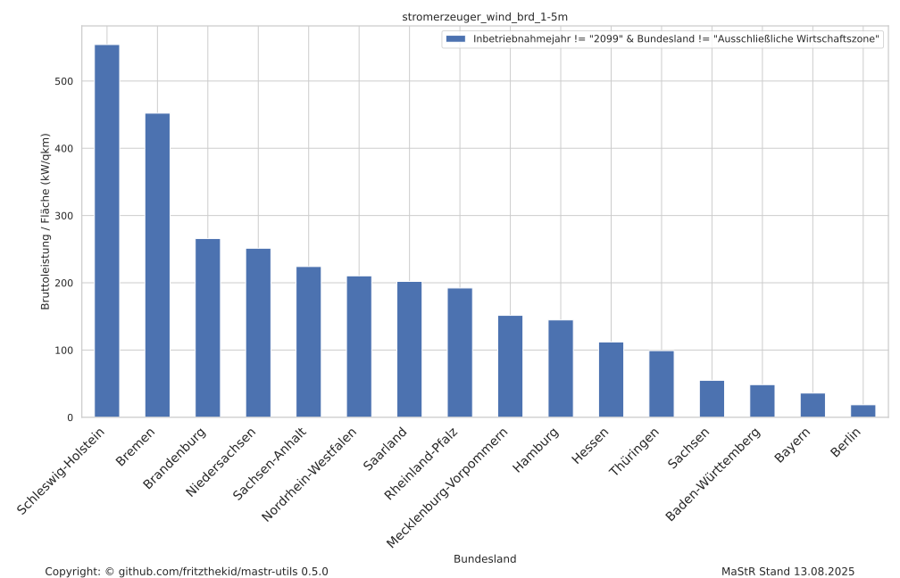
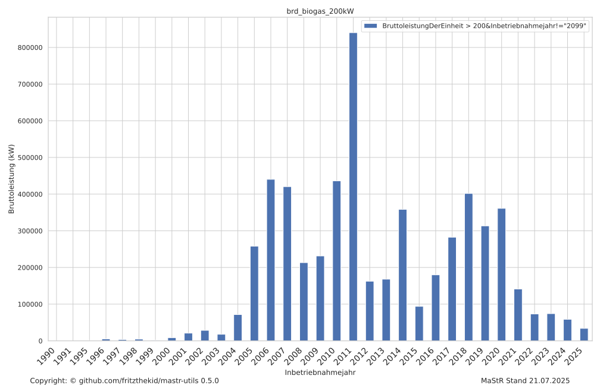
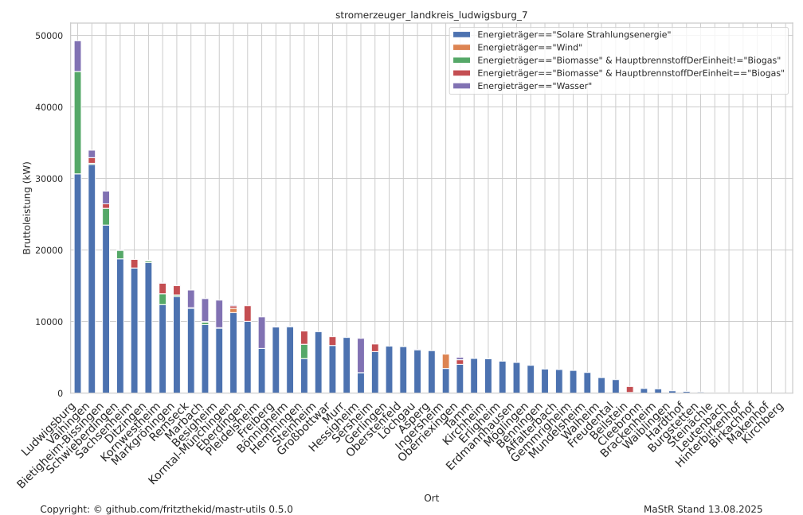

mastr-utils Webanwendung
Hinweis: Diese Tools und die Webanwendung werden angeboten wie in der LICENCE angegeben. Es gibt keine Gewähr, keinen Support oder ähnliches.
Die Webanwendung ist die bequemste Möglichkeit, die Funktionen von mastr-utils zu nutzen. Sie ist erreichbar unter: https://eduard.uber.space/mastrutils
Funktionen der Webanwendung
- Daten-Upload: Lade MaStR-Exportdateien (CSV) direkt hoch.
- Filter & Cluster: Filtere und gruppiere Einheiten nach Bundesland, Anlagentyp, Leistung u.v.m.
- Kartenansicht: Visualisiere Anlagen und Parks direkt auf der Karte (Leaflet-basiert).
- Plot-Erstellung: Erzeuge anschauliche SVG-Plots aus den Daten.
- Export: Lade bearbeitete Daten als GPX oder SVG herunter.
So funktioniert die Seite
- Datei hochladen: Exportiere eine CSV aus dem Marktstammdatenregister und lade sie in der Webanwendung hoch.
- Filter setzen: Wähle die gewünschten Kriterien – z.B. Bundesland, Anlagentyp, Mindestleistung.
- Cluster wählen: Optional kannst du Anlagen nach räumlicher Nähe gruppieren.
- Visualisierung: Die Ergebnisse werden auf der Karte angezeigt. Du kannst Details zu Anlagen abrufen.
- Export: Die gefilterten/geclusterten Daten kannst du als GPX oder SVG herunterladen.
Screenshots & Beispiele

Beispiel: Export einer CSV-Datei aus dem Marktstammdatenregister

Webapp: Kartenansicht mit geclusterten PV-Anlagen

Webapp: Gefilterte Anlagen im Landkreis Ludwigsburg
Direkt loslegen: Zur Webanwendung
GPX Beispiele
Mit mastrtogpx lassen sich Anlagen-Daten in GPX-Dateien umwandeln und als Karte darstellen.
Stromerzeuger BRD PV ≥ 100kW (geclustert)
Solaranlagen ≥ 100kW deutschlandweit, Clusterung nach Fläche
Stromerzeuger Baden-Württemberg Wind ≥ 10MW (geclustert)

Windkraftanlagen ≥ 10MW in Baden-Württemberg, Clusterung nach Fläche
Stromerzeuger ≥ 500kW im Landkreis Ludwigsburg
Alle Stromerzeuger ≥ 100kW im Landkreis Ludwigsburg
Stromerzeuger ≥ 500kW im Landkreis Ludwigsburg (mit Erläuterungen)
GPX-Export mit Erläuterungen zu einer Einheit
Plot Beispiele
Mit mastrtoplot können die Daten anschaulich als Vektorgraphik (SVG) dargestellt werden.
PV ≥ 500kW: Aktive Bruttoleistung pro Fläche
Installierte Leistung von PV-Anlagen nach Fläche und Bundesland
PV ≥ 500kW: Sektorensplit
Verteilung der PV-Anlagen nach Sektoren
PV > 500kW: Installierte Leistung nach Inbetriebnahmejahr
PV-Anlagen nach Jahr der Inbetriebnahme
Wind > 1.5MW: Installierte Leistung nach Inbetriebnahmejahr
Windkraftanlagen nach Jahr der Inbetriebnahme
Wind > 1.5MW: Leistung pro Fläche
Installierte Wind-Leistung nach Fläche
Biogas > 200kW: Installierte Leistung nach Inbetriebnahmejahr
Biogasanlagen nach Jahr der Inbetriebnahme
Ludwigsburg > 7kW: Energieträger-Split
Energieträgersplit aller Anlagen im Landkreis Ludwigsburg > 7kW
CLI-Tools
mastrtogpx und mastrtoplot können auch direkt als Kommandozeilen-Tools genutzt werden:
mastrtogpx: MaStR CSV → GPXmastrtoplot: MaStR CSV → SVG